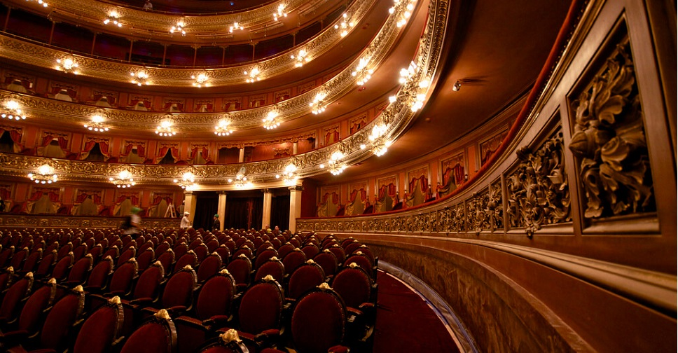

O teatro surgiu na Grécia Antiga, no séc. IX a.C. Consiste em representar uma situação e estimular sentimentos na audiência. A tríade: quem vê, o que se vê e o imaginado é o apoio do drama, pois ele exige uma reflexão propiciada através do ator ou conjunto de atores interpretando uma história. A palavra teatro pode significar tanto o prédio em que se exibem as diferentes formas de arte como uma delimitada arte.
A arte de representar prosperou em terrenos sagrados na Índia, Egito, Grécia, China e nas Igrejas da Idade Média. O modo pelo qual o homem descobriu para revelar seus sentimentos de amor e ódio.
As primeiras sociedades primitivas acreditavam que a dança imitativa influenciava os fatos necessários à sobrevivência através de poderes sobrenaturais, por isso alguns historiadores assinalam a origem do teatro a partir deste ritual.
Os principais gêneros dramáticos conhecidos são: a tragédia nascida na Grécia, a comédia que representa os ridículos da humanidade, a tragicomédia que é a transição da comédia para o drama e o drama (melodrama), ao ser representado é acompanhado por música.
A palavra teatro pode significar tanto o prédio em que se exibem as diferentes formas de arte como uma delimitada arte.
A arte de representar prosperou em terrenos sagrados na Índia, Egito, Grécia, China e nas Igrejas da Idade Média. O modo pelo qual o homem descobriu para revelar seus sentimentos de amor e ódio.
As primeiras sociedades primitivas acreditavam que a dança imitativa influenciava os fatos necessários à sobrevivência através de poderes sobrenaturais, por isso alguns historiadores assinalam a origem do teatro a partir deste ritual.
tipos de teatro
As peças de drama e comédia datam de milhares de anos atrás e são, até hoje, uma manifestação artística popular. Porém, nem todas as pessoas conhecem os diversos tipos de teatro existentes, que são garantia de diversão ou reflexão, dependendo do tema da peça.
Entre os mais comuns estão os: